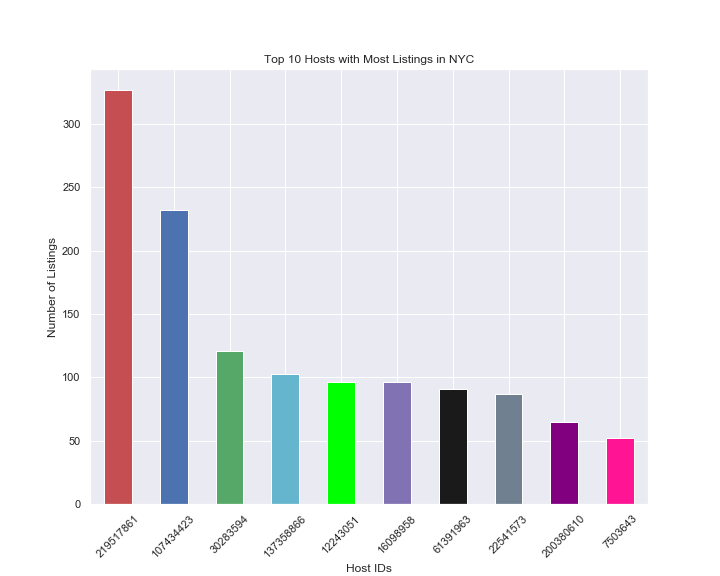
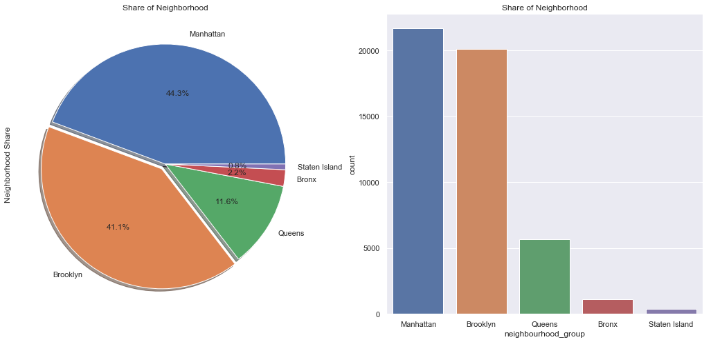
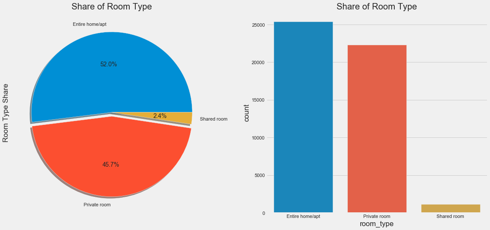
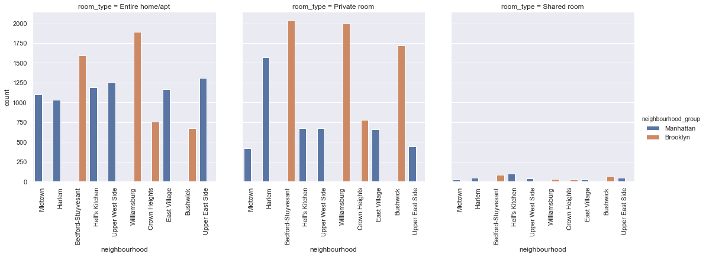
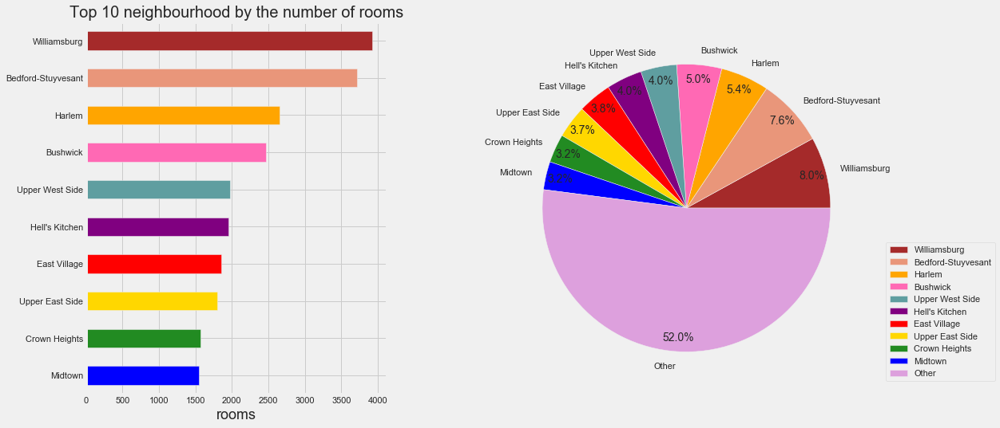

Airbnb provides a platform for hosts to accommodate guests with short-term lodging and tourism-related activities.
Guests can search for lodging using filters such as lodging type, dates, location, and price.
Guests have the ability to search for specific types of homes, such as bed and breakfasts, unique homes, and vacation homes. This dataset describes the listing activity and metrics in New York City, NY for 2019.
In the project, I performed an exploratory analysis of the Airbnb dataset to understand the rental landscape and consumer behavior with Airbnb listings in New York City.
Inspiration:
- What can we learn about different hosts and areas?
- What can we learn from predictions? (ex: locations, prices, reviews, etc)
- Which hosts are the busiest and why?
METHODS
Tools & Libraries used:
- Jupyter Notebook
- Pandas
- Matplotlib
- Seaborn
- Folium
- Numpy
Data Cleaning:
- Removing redundent/irrelevant columns
- Cleaning individual columns
- Replace columns with NaN values with average or zeros to maintain data integrity
Data Analysis

- Interesting, we can see that there is a good distribution between top 10 hosts with the most listings. First host has more than 300+ listings.

- Most of Airbnb listings in New York are near Brooklyn and Manhattan which is expected since it is a popular destination for attractions, restaurants, and business travel.
- Brooklyn and Manhattan are more densely populated compared to the other boroughs.

- The bar plot shows that Entire Home/Apartment are listed most near Manhattan while Private Rooms and Entire Home/Apartments near Brooklyn have similar count of listings.
Given the density of New York City, space is already limited thus there are not a huge supply of 'shared rooms.

- Another visualization of the room type distribution. Entire homes are offered the most since owners have more freedom renting out their own house. Also homeowners can charge more money.

- The observation that is definitely contrasted the most is that 'Shared room' type Airbnb listing is barely available among 10 most listing-populated neighborhoods.
- Out of these 10 neighborhoods only 2 boroughs are represented: Manhattan and Brooklyn; that was somewhat expected as Manhattan and Brooklyn are one of the most traveled destinations, therefore would have the most listing availability.
- We can also observe that Bedford-Stuyvesant and Williamsburg are the most popular for Brooklyn borough, and Harlem for Manhattan.

- The subplot shows the top ten neighborhoods by number of room listings.
- Bedford-Stuyvesant, Williamsburg, and Harlem have the most listings due to their location and popularity.

- Entire home/apartments in Manhattan are most expensive, averaging nearly $400 per night.
- Staten Island, Queens, and Brooklyn lie between $250-275 per night. Bronx is the cheapest at $200 per night.

- Private rooms in Brooklyn, Bronx, Staten Island, Queens cost around $100 per night.
- On the contrary, private rooms in Manhattan cost nearly $180 per night.

- A shared room is cheapest in Brooklyn and Bronx, approximately $80. As expected, Manhattan is the most expensive at nearly $150 per night.

- Based on this violin chart, Manhattan has the widest distribution (wide range of prices) with $ 150 as average.
- Brooklyn has the second highest distribution.
- Queens and Staten Island have similar distributions and averages. Bronx is the cheapest of them all.
- This violin chart is logical since Manhattan is known as one of the most expensive places in the world to live in whereas Bronx has a lower standard of living costs.

- It shows that hosts are simply describing their listings in a short form with very specific terms for easier search by potential travelers.
- Since Airbnb is used internationally, hosts need to use simple terms to describe the listing and area surrounding the it.